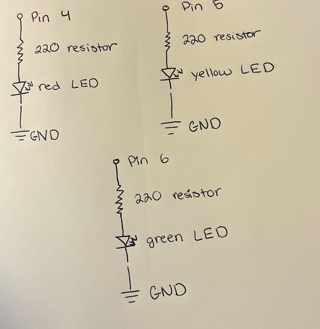
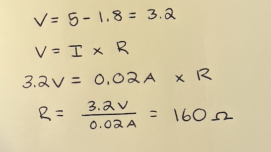
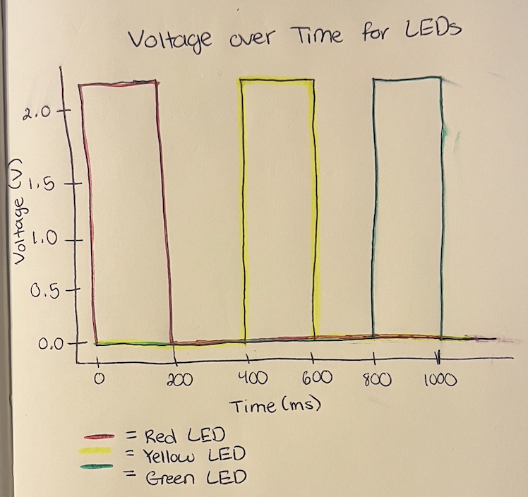

Here is all the documentation for assignment 1!
Here is my drawings of the schematic for this circuit.
Here is my calculation for the resistors for this circuit.
The Arduino output voltage is 5V and each LED has a voltage drop of 1.8V. The desired current for each LED is 20mA or .02A. Based on my calculation of a 160 ohms I used a 220 ohm resistor to ensure that the current in each LED wouldn't exceed 20mA.
Here is my circuit I made. I chose to use 3 LEDs including a red, yellow, and green LED. I connected these LEDs to the 4, 5, 6 pins in my Arduino.
Here is a gif of the functioning circuit.
Here is a code snipit from the Arduino code that I wrote for the circuit. I used red, yellow, and green LEDs and connected them to the 4, 5, and 6 pins in my Arduino. I chose to have each LED light up for 200ms and then turn off for 200ms before the next one turns on.
// Label LED pins
int red = 4; // Pin for red LED
int yellow = 5; // Pin for yellow LED
int green = 6; // Pin for green LED
// the setup function runs once when you press reset or power the board
void setup() {
// Set all LED pins as OUTPUT
pinMode(red, OUTPUT); // initialize red LED as an output.
pinMode(yellow, OUTPUT); // initialize yellow LED as an output.
pinMode(green, OUTPUT); // initialize green LED as an output.
}
// the loop function runs over and over again forever
void loop() {
// turn red LED on and off
digitalWrite(red, HIGH); // turn the red LED on (HIGH is the voltage level)
delay(200); // wait for 200 milliseconds
digitalWrite(red, LOW); // turn the red LED off by making the voltage LOW
delay(200); // wait for 200 milliseconds
// turn yellow LED on and off
digitalWrite(yellow, HIGH); // turn the yellow LED on (HIGH is the voltage level)
delay(200); // wait for 200 milliseconds
digitalWrite(yellow, LOW); // turn the yellow LED off by making the voltage LOW
delay(200); // wait for 200 milliseconds
// turn green LED on and off
digitalWrite(green, HIGH); // turn the green LED on (HIGH is the voltage level)
delay(200); // wait for 200 milliseconds
digitalWrite(green, LOW); // turn the green LED off by making the voltage LOW
delay(200); // wait for 200 milliseconds
1. Voltage Graph
2. I could blink 14 LEDs independently with my Arduino becuase that is the number of available pins that can be used as an output on my board. That would draw 200mA of current because each LED is indidivually connected to a pin and they are blinked independently.
3. I have to blink my LEDS every 5 milliseconds before I can't tell that they are blinking anymore and they just look like they are constantly on but changing brightness.